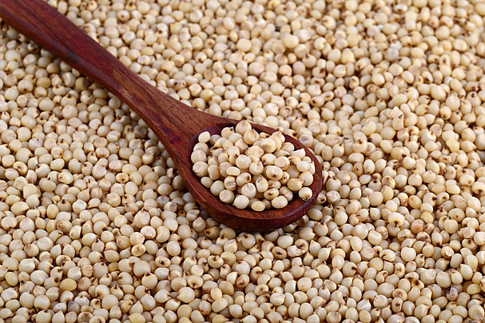

1. Seasons for Growing Jowar

Jowar, also known as sorghum, is a versatile crop that grows well in both tropical and temperate regions. It can be planted in different seasons based on regional climate:
- Monsoon: In India, jowar is usually sown during the monsoon season (June-July) to take advantage of the rains.
- Post-Monsoon: In regions with a second rainy season, jowar can be planted in the post-monsoon period (September-October).
- Rabi Season: In some areas, jowar is grown as a rabi crop in the cooler months after the main rainy season.